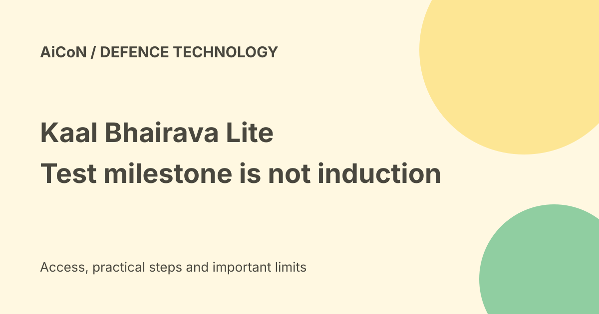

Kaal Bhairava Lite: flight-test milestone versus military induction
Flying Wedge Defence and Aerospace reported one hundred cumulative airborne test hours for Kaal Bhairava Lite in September 2026. This is a reported development milestone. It is not proof of military induction, a procurement order or independent certification of every performance claim.

What was reported?
The Indian Express reported the Bengaluru company's one-hundred-hour milestone on 23 September. A company social post also claims more than one hundred airborne hours.
Cumulative hours are added across flights. They do not mean that the aircraft stayed airborne for one hundred hours in one flight. This basic distinction matters when reading endurance headlines.
What kind of platform is it?
The reporting describes a medium-altitude, long-endurance autonomous aircraft. The manufacturer's product listing calls Kaalbhairav Lite an indigenous long-endurance ISR UAV.
ISR means intelligence, surveillance and reconnaissance. UAV means unmanned aerial vehicle. These terms describe a category and intended roles, not evidence that a particular buyer has approved it.
Separate company claims from independent tests
The report attributes performance and trial descriptions to Flying Wedge. The company also makes autonomy and indigenous-content claims in its own post.
This guide did not observe the trials, inspect test records or verify those claims independently. Reporting a manufacturer's milestone is different from publishing an independent flight-test assessment.
Range and endurance are different
Range describes distance capability, while endurance describes time airborne. A manufacturer can quote both, but the conditions and configuration affect whether they can be achieved together.
Do not combine rounded figures from separate headlines into a guaranteed mission result. A useful evaluation would need test conditions, payload, reserves, configuration and repeatability.
Do not mix Lite, Medium and Heavy
The current manufacturer site lists Kaalbhairav Lite, Medium and Heavy separately. The original post linked a Medium path while discussing Lite.
That mismatch can make readers attach specifications from one version to another. Use the named variant and its own current documentation. This guide does not transfer figures between those models.
The Navy status
The September report says the Indian Navy had not placed orders and was at a Request for Information stage for a relevant requirement. It says the company intended to participate.
An RFI gathers information. It is not a contract, successful tender, acceptance test or induction. A manufacturer's interest in a requirement does not prove selection.
Certification needs the exact model
The article discusses the firm's earlier DGCA-type certification for an indigenous UAV. That is not enough to conclude that every Kaal Bhairava variant has the same certification.
DGCA is India's Directorate General of Civil Aviation. To assert approval for a particular model, require the actual certificate, holder, model identifier and conditions. This guide did not establish a Lite-specific certificate.
The first-in-India label
The original headline and reporting use a first-indigenous-AI-powered description. Such a label depends on the category and definition.
This guide focuses on the reported milestone rather than treating the first label as an independently settled ranking. Terms such as AI-powered and autonomous also need specific definitions and tested boundaries.
What evidence would show a later change?
- A dated official procurement or acceptance announcement.
- A named model and configuration.
- Applicable certification records.
- Independent test summaries and limitations.
- A clear distinction between demonstrations, trials and service use.
These are evidence checks, not instructions for operating or modifying a combat platform.
India access and cost verdict
This is defence-industry news about an Indian manufacturer, not a consumer AI service or a free app. The checked sources do not establish a public retail price or ordinary consumer ordering process.
No procurement, military contact or product inquiry was made. A headline about a domestic development is not a recommendation to buy, fly or deploy it.
How to follow the story
- Check the date and exact variant.
- Separate test hours from single-flight endurance.
- Keep manufacturer attribution on performance claims.
- Look for official buyer and certification records.
- Do not turn an RFI or demonstration into an order.
The sources support a bounded news explainer, not engineering, targeting or operational guidance.
What changed since the original post?
We correct the Lite-versus-Medium source-path mismatch and make clear that cumulative hours, a company certification history and Navy interest do not establish military induction. No new buyer order was verified in the checked sources.
Frequently asked questions
Was there a single one-hundred-hour flight?
The claim is cumulative test time.
Was a Navy order confirmed?
No. The cited September report says no order at that time.
Was Lite-specific certification verified?
No. The company's broader certification history is not enough.
Sources: Manufacturer current Lite listing · Indian Express milestone reporting · Company claimed test milestone. Checked 7 October 2026.